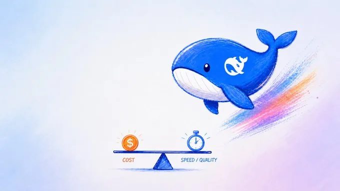
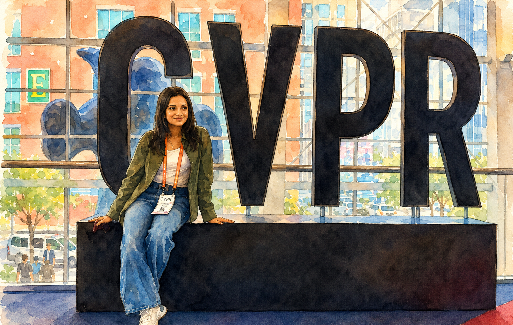
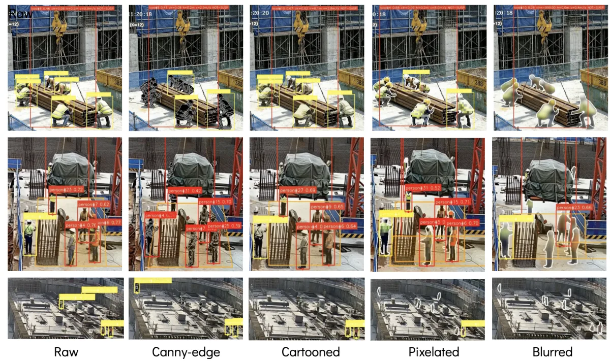
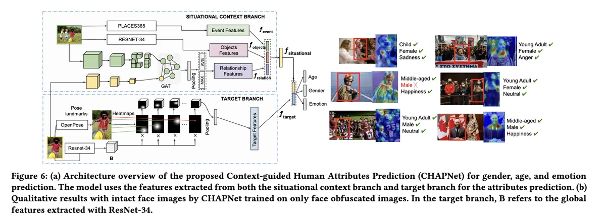
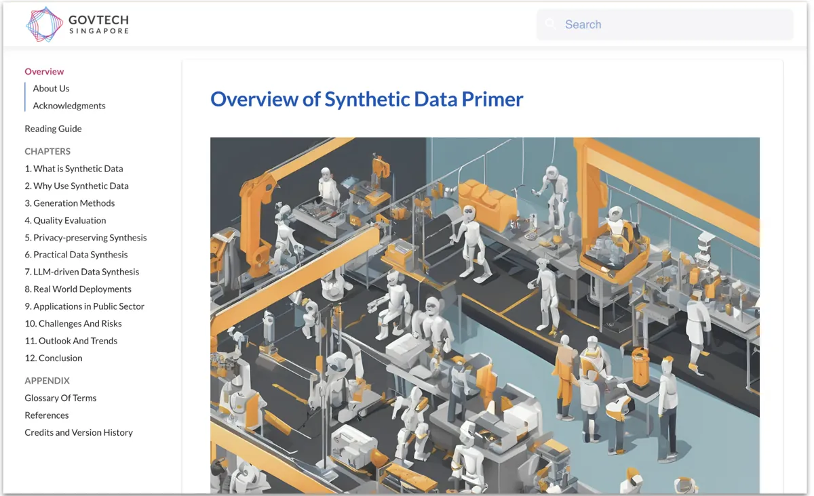

Hi, I am
Anshu.
I am an Applied AI Research Engineer at GovTech Singapore, Singapore’s main government technology agency, where I build and evaluate AI systems across generative modelling, synthetic data, and data privacy.
My work spans AI research, full-stack engineering, and product development, allowing me to take projects from early research and rapid prototyping through user validation, production deployment, and rigorous evaluation.
I work closely with global experts across industry and academia and remain deeply curious about emerging advances in both communities. I enjoy identifying promising ideas, testing them in real-world settings, and shaping them into reliable AI products.
Previously, I was a Research Assistant at the National University of Singapore (NUS), working with Prof. Mohan Kankanhalli and Dr. Shaojing Fan on computer vision research under constrained visual settings. I also hold a Master's in AI from NUS (dissertation track).
Blogs

Image and Video Generation at CVPR 2026 (in-person)
What I Learned Building an AI That Knows When Not to Decide
More here Medium.
Selected work
SynthSite — Synthetic video generation & benchmarking
SynthSite began as a practical deployment problem — evaluating safety site-analytics vendors with almost no footage of rare hazards — and grew into research. It is a hybrid local–cloud video generation pipeline with human curation and safety annotation, LoRA fine-tuned to synthesize rare worker-under-suspended-load scenarios, with agency domain experts reviewing the outputs. Published at the CVPR 2026 SynData4CV workshop; dataset and code on Hugging Face.
Mirage — Whole-of-Government synthetic data platform
Mirage is the government's self-service platform for mock and synthetic data generation, used in production by 30+ agency teams. I led the build-vs-buy evaluation against vendor systems, then built the generation stack in-house — PyTorch modeling across copula, VAE, GAN, and diffusion generators, adaptive model routing and cascading, automated hyperparameter optimization, and multi-dimensional privacy–utility evaluation.
DataSharingAssist
I ideated and product-led DataSharingAssist, an AI assistant for explainable data classification and data-sharing guidance — recommendations and justifications grounded in government policies through retrieval, with the full reasoning process visible to the user. It gained traction with 20+ agencies through in-person pilots with data teams and policymakers, was presented at the IEEE Symposium on Privacy Expectations in New York, and was selected into the government-wide Build for Good hackathon for its high impact.
Experience
- 2022–now. AI Research Engineer, Government Technology Agency (GovTech), Singapore — multimodal AI, generative models, data privacy, and synthetic data products for the whole of Singapore Government.
- 2020–2021. Research Assistant (Computer Vision), NUS Centre for Research in Privacy Technologies — human attribute prediction under privacy-preserving conditions, advised by Prof. Mohan Kankanhalli and Dr. Shaojing Fan.
- 2016–2019. Software Engineer, DBS Bank and HashedIn Technologies (Deloitte) — customer-facing web products and zero-to-one internal tools, before moving into AI research and engineering.
- Education. Master of Computing (Artificial Intelligence), National University of Singapore — dissertation in computer vision.
Selected Research Outputs
- 2026. Anshu Singh*, Alejandro Seif*. "Privacy-Aware Synthetic Video Benchmarking and Relational Evaluation for Worker-Under-Suspended-Load Detection." 3rd Workshop on Synthetic Data for Computer Vision (SynData4CV), CVPR 2026. [*equal contribution]
- 2025. Authored a primer on synthetic data — a playbook covering generation methods, evaluation, risks, and practical guidance for researchers, practitioners, and decision makers — reviewed by Prof. Mohan Kankanhalli, Prof. Xiaokui Xiao, Dr. Shlomi Hod, Dr. Yihao Ang, Prof. Anthony Tung, and Singapore's PDPC.
- 2023. Authored Sharing Data with Differential Privacy: A Primer and the accompanying benchmarking repository, reviewed by Prof. Xiaokui Xiao and Dr. Damien Desfontaines.
- 2021. Anshu Singh, Shaojing Fan, Mohan Kankanhalli. "Human Attributes Prediction under Privacy-Preserving Conditions." ACM Multimedia 2021. [Oral]



Community
- 2026. International Chair, IEEE Symposium on Privacy Expectations (ISoPE).
- 2026. Co-lead organizer and reviewer, AAAI Workshop on Shaping Responsible Synthetic Data in the Era of Foundation Models ( recording), with Rachel Cummings, Shlomi Hod, and Zilong Zhao.
-
2024–2026.
Lorong AI (building Singapore's AI ecosystem)
- Hosted Paper Club: How Multimodal Models Are Actually Built: From CLIP to Qwen2.5-VL (slides).
- Hosted Paper Club: How Research Agentic Systems Are Actually Built: From ReAct to the AI Scientist (slides).
- Presented two AI Wednesdays sessions on synthetic data generation.
- Reviewer, ISACA whitepaper on Privacy-Enhancing Technologies.
Selected talks
- 2026. SynthSite: Privacy-Aware Synthetic Video Benchmarking for Worker-Under-Suspended-Load Detection (poster), presented at the 3rd Workshop on Synthetic Data for Computer Vision (SynData4CV), CVPR 2026, Denver, USA 🇺🇸.
- 2025. Empowering Government Agencies in Singapore for Confident Data Sharing: Design and Early Insights from an AI-powered Tool for Data Privacy and Quality Assessment, IEEE Symposium on Privacy Expectations (ISoPE), New York, USA 🇺🇸.
- 2025. Enabling Better Guidance for Data Classifications through an AI-assisted Educational Tool (slides), GovTech STACK Meetup.
- 2024. Bridge the Usability Gap For Widespread Adoption Of Differential Privacy, Sydney Privacy Workshop, University of Sydney, Sydney, Australia 🇦🇺.
- 2024. Workshop on synthetic data (slides), GovTech STACK Developer Conference.
- 2023. Privacy in the Public Sector: Lessons Learned and Strategies for Success, USENIX Conference on Privacy Engineering Practice and Respect (PEPR), California, USA 🇺🇸.
- 2023. Implementing Differential Privacy, GovTech STACK x Data Science & AI Series Meetup.
- 2022. Workshop on Differential Private Statistics Release, GovTech STACK Developer Conference.
Beyond work
Outside work, I love playing and learning tennis 🎾. I am still picking it up, but that is exactly what I enjoy about it: the process of observing my own game without judgment and improving through practice.
Content creation
I have recently started creating content on AI — a long game I am committed to across formats.